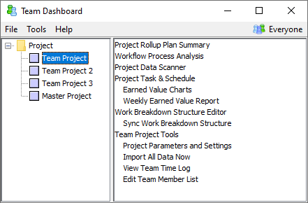

You will make extensive use of the Team Dashboard during the project launch. Thus, if the Team Dashboard is not already running, you should start it using the appropriately named shortcut on the team leader's computer.
Many of the tools you will need during the launch are provided in the script menu for the team project. To open this menu, select the team project and click the Script Button.

If you prefer, you can also open these tools from a web browser; just choose Team Project Tools from the menu described above. The Team Project Tools page will open in your Web browser.